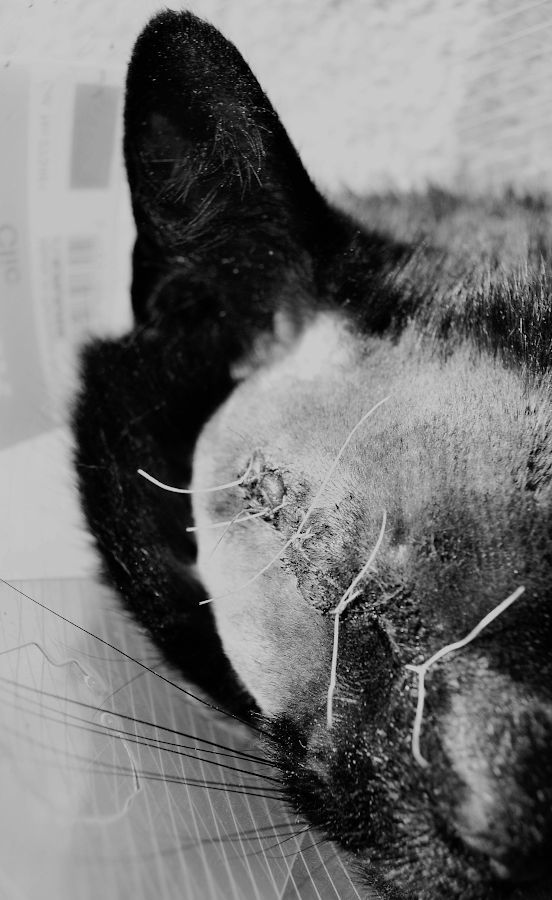

Lucky was my best friend for the better part of 10 years. I don’t remember when he died. It was a year or two ago.
When they go blind, some cats regress back to a more kitten-like stage; Lucky slowly lost his vision over a number of years. First, he suffered a loss to an unknown assailant shortly after taking a light hit from a car one halloween—the eye almost bisected, we found him sitting on the stairs in silence following a few days’ absence. A pure-bred, the fur of him a sunless black, he was especially prone to infection, and so, rather than suffering the immediate loss or eternal absence of most, his vision faded gradually as though in preparation.
By the time he was fully-blind, he’d adjusted, whiling away his days sunning himself in the garden or curled upon our beds, and occasionally irritated —but also somewhat comforted— by the presence of the third cat, who would also develop cancer. All three died from a dose of anaesthetic. The time we came to see off the first, I’d asked the veterinarian what was used to kill them. Lucky was the 2nd. I didn’t go to see the third die.
Lucky could hardly be seen in most pictures—his black fur often consumed the light around him, rendering all but the most extreme overexposure inviable; the world inside the photograph would glow, light blooming around his illuminated form as though he were a shade traversing the aether. I don’t remember what his eyes looked like, even with a single extant print from when we picked him up that night. With no help of golden irises to hold his face in place, I can only grasp his orientation, a vague direction of interest or hint of intentionality in those old prints.
I remember his gait, the way the head would bob slightly, employing some sensory check of the space immediately preceding him before continuing on —— a low, rumbling drone upon recognition of his companions. He had only adoration for anybody who would offer him their hand.
At the moment Lucky died I felt nothing. He became more like his pictures; an empty space, holding nothing but his shape. The five to ten minutes preceding the injection went slow: building pressure in my chest, grief tearing at the muscles in my face, grimaced in strange contortions, unable to breathe through the nose. Most of these scenes are faded in my memory, somehow reconstructed in the third person in my imagination. The anticipation tipped somewhat off-balance by warm purring and curiosity for this strange new space, so different in timbre, texture and scent to the small regions Lucky had become accustomed to in his past life.
He circled around our feet and the yellow walls of the small cube, occasionally knocking head-first (but slowly, as so he’d learned to move) into the steel leg of the table. We hoisted him upon it; used to being man-handled, he desired only to offer –and receive– more affection. I watched and felt him slowly limpen as the sedative overwhelmed his system, shut down his lungs, black fur gently squashing into the cold metal, some tiny degree of body heat presumably transferring onto the surface as he lay there pressed against it.
Though the nurse warned he might, he never soiled himself.
Between the moment he began to fall asleep, and moments later when he stopped breathing, whatever the thing I had thought Lucky to be had disappeared. I stroked his fur and felt his paws – a sensation he hated – spending a long time watching the body from my stool, hunched over and resting my chin next to it like I could never see him well close enough.
My mother left shortly after the veterinarian. At the time, I found myself confused, almost narrating that experience to myself – that feeling of staring at my dear friend – in my mind in a long silence, eventually, broken—the nurse gently advising that soon, you must leave for the next.
He’d been brought to the door one evening by a woman I only heard but never saw offer. From the hall, mother entered, asking “would you like a cat? There’s a lady giving them away”.